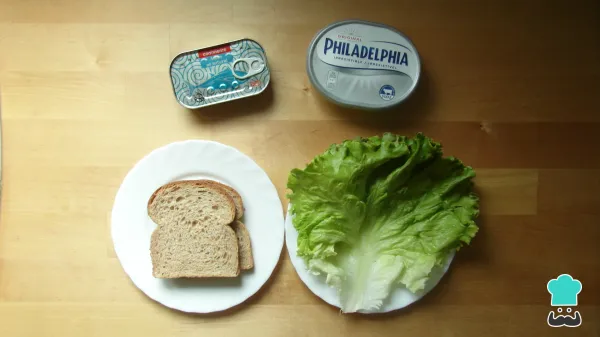
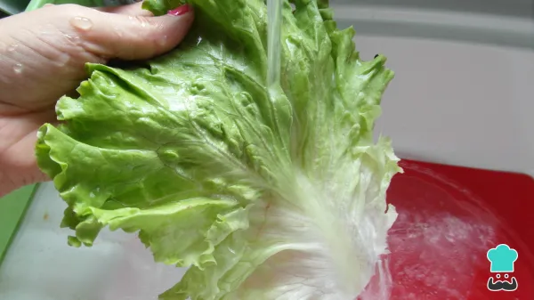
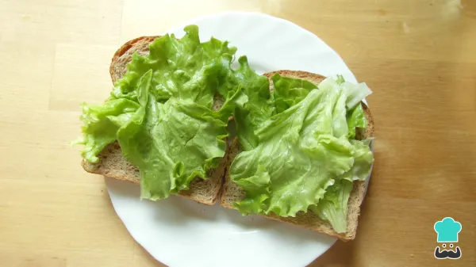

Para preparar este sanduíche natural de atum, comece por reunir os ingredientes.
Para preparar este sanduíche natural de atum, comece por reunir os ingredientes. Escorra o atum e misture-o com o cream cheese, até formar uma pasta. Nesta receita o cream cheese é um substituto saudável da maionese.

Lave muito bem a folha de alface, seque e desfaça em pedaços menores com as mãos. A alface dá um toque refrescante e leve a este lanche natural de atum.
Monte o sanduíche: coloque pedaços de alface em cada fatia de pão.
Espalhe a pasta de atum saudável sobre uma das fatias com alface de cada sanduíche. Tampe com a outra metade.
Após o passo anterior, o lanche natural de atum está pronto! Sirva ao lanche ou como substituto de refeição, sem culpa porque esta é uma opção saudável e própria para quem quer perder peso. Bom apetite!
Receita completa retirada do site Tudo Receitas